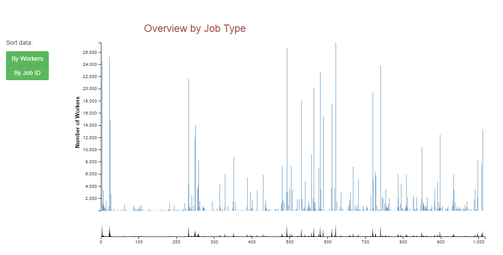
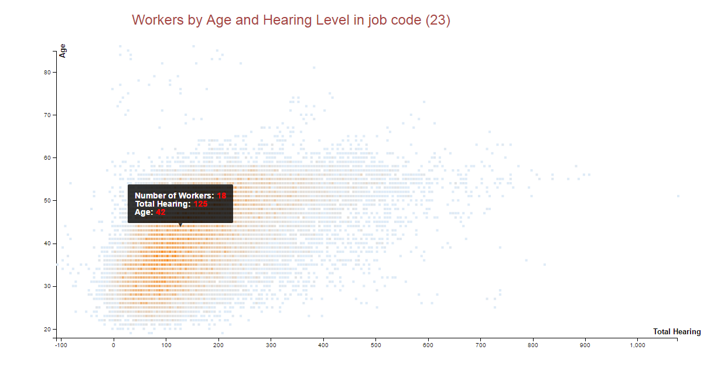
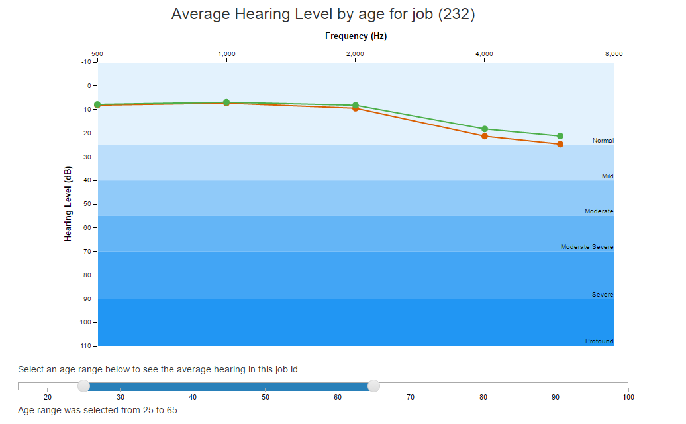
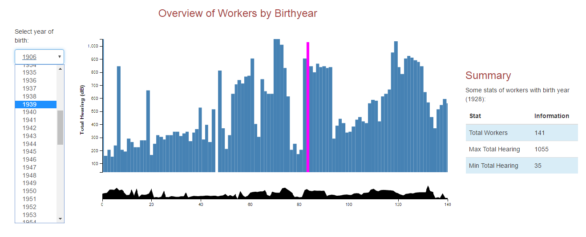
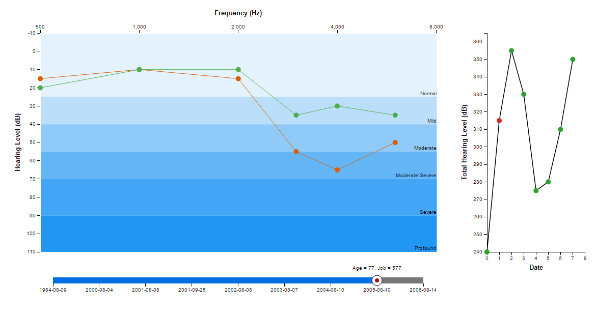

Hearing Conservation Program (HCP) conducted by US Navy aims to protect and prevent the hearing loss in service members. This program is based on the idea that being exposed to an extremely loud noise could cause someone instantly lose the hearing ability. However, people who are exposed to the noise for a very long term will have a five-year lag before the hearing loss could be noticed. People who are tested in this program are workers who exposed to noise levels in the range 85-100 decibels (dBA). Their hearings are tested on regular basis. The test details are recorded in the audiogram so that there will be beep sound at different frequencies as and when the volume is increased. Figure 1 shows an audiogram for normal ears.
A person who is taking the test raises their hands as a response after hearing the beep and the frequency along with the volume are recorded. Hearing loss is indicated by a higher dBA number, which is recorded by an "O" (right ear) or "X" (left ear). Figure 2 shows an example of audiogram for noise-induced hearing loss. Due to limitations in the data collection methods and the characteristics of the Navy worker population, it is difficult to learn more about the data by using traditional data analysis. Workers often do not stay in the same job for many years. For example, if a worker changes his job from the flight deck of an aircraft carrier to the laboratory and then has his hearing measured, it might appear that lack of noise exposure was causing his hearing loss. Therefore, a visualization is needed to help better understanding the audiogram data.
In this paper, the authors analyzed a dataset of audiograms having more than 700,000 records covering 20 years of the program till the year 2012 and produced several interactive visualizations using D3.js for the user to see the hearing curves of workers over the years. Hearing curves are visualized by JobID and the WorkerID. For hearing curves by JobID, overview-detail charts are provided to identify the average hearing levels for different age ranges. In addition to these, the heat map is provided to see the frequency of the workers belonging to that JobID. Another overview-detail chart is designed for hearing curves by WorkerID. This visualization allows the user to explore hearing curves for individual workers at different age along with their total hearing curves. This will be discussed in more detail in further sections.
An overview of more than 1000 job types in the program allows users to get some overview information in that job type.
From each job type, detail information will be provided in the detail charts.
From each job type, detail information will be provided in the detail charts.
The barchart allows users filtering workers by birth year and showing total hearing level of each worker over the years in program.
This is the detail information of each worker that has been selected from previous overview chart
